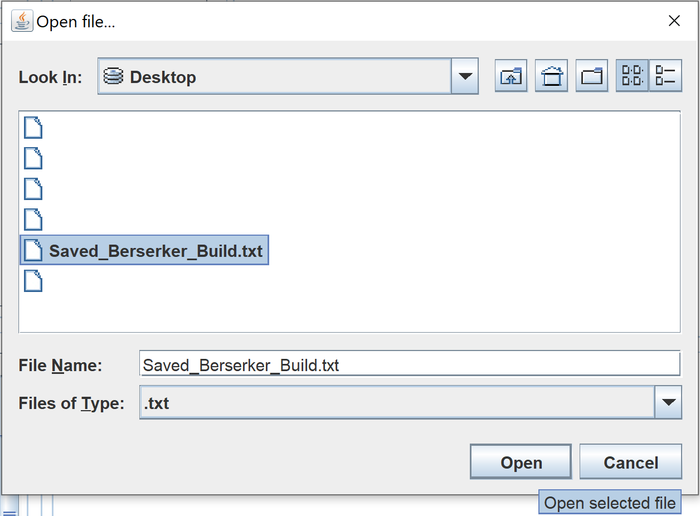
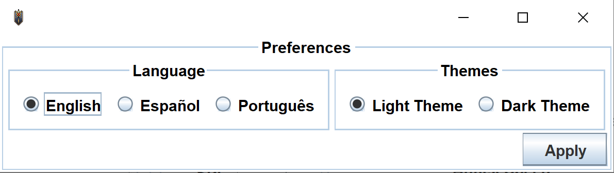
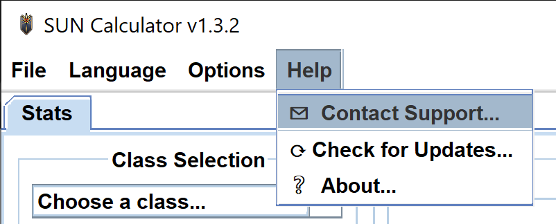
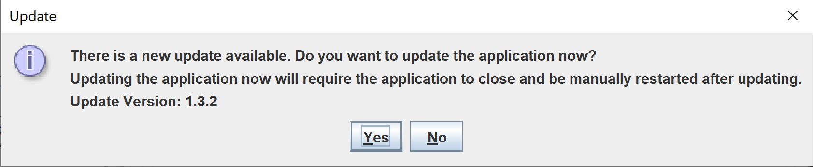

Comprender los conceptos básicos
Contenido
❈ Abrir compilaciones guardadas
Para abrir una compilación guardada, el usuario debe tener un archivo guardado que contenga información sobre un personaje. Este tutorial usará un archivo llamado "Saved_Berserker_Build.txt". Puede descargar el archivo zip que contiene el archivo de texto del sitio web de Valiant. Descargar: SUN Calc_Tutorial_Berserker Build.zip.
Para abrir una compilación guardada desde un archivo de texto, el usuario debe ir a Archivo en la esquina superior izquierda y hacer clic en "Abrir ...".

Se abrirá otra ventana y le pedirá al usuario que seleccione un archivo. En este ejemplo, el tutorial abrirá un archivo llamado "Saved_Berserker_Build.txt" desde el escritorio.

Haga clic en "Abrir" una vez que el usuario haya seleccionado un archivo. La información dentro del archivo se cargará en la Calculadora.
❈ Guardar una compilación en progreso
Para guardar una compilación, el usuario debe haber seleccionado una clase de la barra desplegable dentro de la sección "Selección de clase" antes de continuar en este tutorial. Para descubrir cómo seleccionar una clase, visite "Crear personaje Construye" tutorial.
Para guardar una compilación, el usuario debe seleccionar Archivo en la esquina superior izquierda y hacer clic en "Guardar como ...".

Se abrirá otra ventana y le pedirá al usuario que nombre el archivo y seleccione un directorio para guardar el archivo. Si el usuario desea reemplazar un archivo existente, vaya al directorio donde existe el archivo y haga clic en el archivo de texto disponible. En este ejemplo, el tutorial guardará el archivo como "Saved_Beserker_Build".

Haga clic en Guardar y la Calculadora notificará al usuario que la compilación se ha guardado en el archivo especificado en el cuadro "Mensajes del sistema".
❈ Cambiar el idioma y el tema
NOTA: La aplicación se puede cambiar para iniciarse en un idioma o tema en particular; para hacer esto, el usuario debe leer el cambio preferencias del usuario sección de este tutorial.
Para cambiar el idioma, el usuario debe hacer clic en Idioma en la barra de menú en la parte superior y seleccionar un idioma en el menú desplegable.
Para cambiar el tema, el usuario debe hacer clic en Opciones en la barra de menú en la parte superior, desplazarse sobre Temas y hacer clic en un tema en el menú lateral.
❈ Cambiar las preferencias del usuario
Para cambiar las preferencias de inicio de la aplicación, haga clic en Opciones en la barra de menú en la parte superior y haga clic en "Preferencias ..." en el menú desplegable.

Aparecerá una nueva ventana y en esta ventana el usuario puede cambiar cualquiera de las preferencias. Haga clic en "Aplicar" en la esquina inferior derecha de la ventana y la aplicación guardará y ajustará su configuración.

❈ Soporte de contacto
Haga clic en "Ayuda" en la barra de menú en la parte superior de la ventana de la aplicación. En el menú desplegable, haga clic en "Contactar al soporte técnico ...". Esto llevará al usuario a la página principal de Valiant Guildsitio web.

El sitio web se iniciará en el navegador predeterminado en la computadora del usuario. El sitio web se verá como la imagen de abajo. Por favor, rellene el formulario y haga clic en enviar".

❈ Buscar actualizaciones manualmente
Haga clic en "Ayuda" en la barra de menú en la parte superior de la aplicación y haga clic en "Buscar actualizaciones ..." en el menú desplegable.

Si se necesita una actualización, aparecerá una ventana emergente y le pedirá al usuario que haga clic en "Sí" o "No". Al hacer clic en "Sí", la aplicación se cerrará eventualmente después de iniciar el actualizador. Una vez que la aplicación termine de actualizarse, el usuario deberá reiniciarla manualmente.

Para confirmar si la aplicación está actualizada, el usuario puede marcar la casilla "Mensajes del sistema". La siguiente imagen muestra qué mensajes esperar.